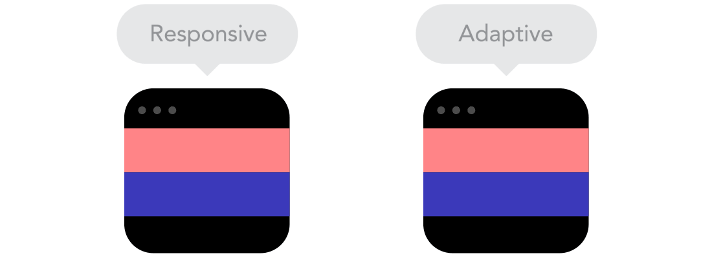

Oleh Ryan Andhaka
Desain web adaptive merupakan desain web yang memiliki layout yang berbeda untuk resolusi yang berbeda. Desain web ini dibuat dengan target resolusi tertentu misal untuk perangkat ponsel, tablet dan desktop. Teknik desain web adaptive bisa dikatakan hampir sama dengan teknik desain web static, dimana desain web dibuat dengan teknik static namun memiliki beragam desain untuk perangkat tertentu.
Desain web responsive ialah gabungan 2 desain web utama yaitu desain web liquid dan responsive. Desain web responsive ialah pilihan desain web terbaik untuk saat ini. Dengan desain web responsive, secara otomatis tampilan konten akan menyesuaikan diri (beradaptasi) dengan berbagai resolusi perangkat. Desain web responsive tidak dibuat hanya untuk resolusi tertentu melainkan desain dapat menyesuaikan diri pada berbagai perangkat dan resolusi.
Sangat berdampak dari segi desain web, apalagi sekarang website tidak hanya dapat diakses di desktop saja, melainkan dapat diakses di smartphone yang mempunyai dimensi yang lebih kompak yang mengharuskan desainer website memikirkan kompabilitas website-nya
Saat ini baik tunanetra & tunarungu, tunadaksa, dan tuna grahita dapat mengakses website dengan baik namun tidak sebaik kita yang beruntung. Tunanetra dibantu dengan suara & tunarungun dengan teks. Kita sangat perlu untuk mengakomodasi mereka yang tidak seberuntung kita. Banyak sekali teknologi yang dapat memudahkan mereka, seperti virtual reality, augmented reality dan mengaplikasikan beberapa ilmu artificial intelligence sebagai solusi yang tepat guna.
Konsep dimana desain web bukan sekedar keindahan tapi juga fungsionalitas, saya sangat menyukai website yang aplikatif dan terkonsep.
saya sangat menyaranakan untuk berkunjung ke www.awwwards.com, disana banyak terkumpul link-link website yang mind blowing yang pastinya keren-keren, sampai-sampai ingin mencoba buat tapi masih belum bisa .